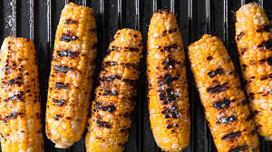

Corn Ingredients

Ingredients
6 ears corn
6 tablespoons butter, softened
salt and ground black pepper to taste
1 tsp black pepper (freshly ground)
Steps to Cook
- Preheat an outdoor grill for high heat and lightly oil grate.
- Peel back corn husks and remove silk. Place 1 tablespoon butter, salt and pepper on each piece of corn. Close husks.
- Wrap each ear of corn tightly in aluminum foil.
- Cook on the preheated grill, turning occasionally, until tender, about 30 minutes.